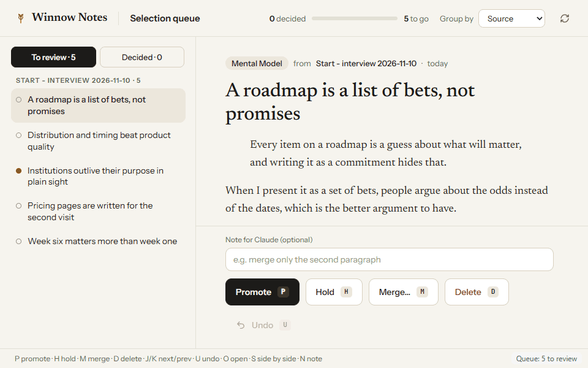
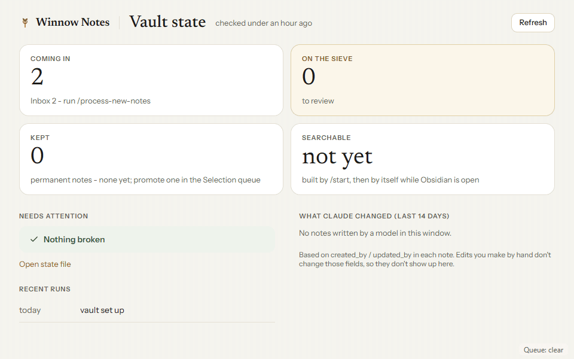
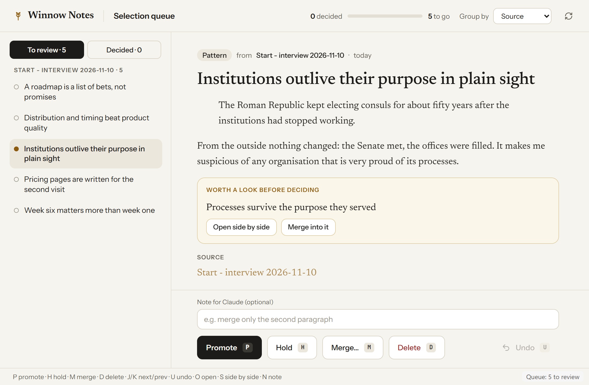

For a handful of friends, November 2026
A second brain that keeps only what you said yes to
You write or dictate whatever you're reading and chewing on, Claude goes through it and pulls out the actual claims, and they land in a queue in Obsidian where you promote the ones that sound like you and bin the rest. A few weeks in, you can ask the vault what you think about something and the answer comes from your own notes, in your words.
Free download. You'll need a paid Claude plan and a Readwise account, prices below.

How it works
The loop takes maybe 20 minutes a week
Most of us already have a highlights folder somewhere, and it works mainly as a well-organised landfill - everything is in there, nobody goes back, and the reaction you had while reading is the one thing that didn't get saved. Winnow is built around that reaction. You put your own take in Inbox/, a line or a rambling paragraph, and Claude turns each claim it finds into a small candidate note, one idea per note, keeping your wording where it can.
Nothing becomes a permanent note until you promote it, which sounds like a small thing but it's the part that keeps the vault yours rather than a pile of plausible-sounding text you never actually agreed with.
Your first batch comes from /start, a ten-minute conversation in Claude about two or three things you care about, so day one already has candidates waiting and you haven't written a note yet.

/process-new-notes, five candidates in the queue.Obsidian
Write or read
Reactions, arguments, half-thoughts in Inbox. Readwise brings your highlights in on its own.
Claude
/process-new-notes
Claude reads what's new and writes up the claims it finds as candidates. A minute or two.
Obsidian
Selection queue
Promote, hold, merge or delete, one card at a time, keyboard if you like.
Claude
/graduate-insights
Your yeses move into Permanent Notes. Then you can ask with /get-perspective-on.
What you need
Three accounts, one of them free
Winnow is glue between three tools you probably half-use already, plus a search engine that runs on your own machine. Here's what each one costs, as of November 2026.
Claude
Pro $20 / month
Any paid plan with Cowork. Claude does the reading and writing, through the Winnow plugin you add in step 4.
Obsidian
free
Where the notes live, as plain Markdown files in a folder you own. The Selection queue and Vault state panel run here.
Readwise
30 days free, then $5.59 - $12.99 / month
Required. It's how your reading gets into the vault, and the reading side of Winnow (/recommend-reading) is built on it. Setting it up, step by step.
Readwise is $5.59 to $9.99 a month on yearly billing depending on the plan, or $12.99 for the full plan billed monthly (readwise.io/pricing). Message Sean for his invite link before you sign up, it gives you both an extra free month. They also do 50% off for students and people in academia, and discounts for some countries, if you email them.
Setup
Six steps, most of them clicking Next
Install Obsidian obsidian.md
Download it from obsidian.md. No account needed.
Download and open the starter vault Obsidian
Get the zip below, unzip it somewhere you'll keep it (not Downloads, ideally), then in Obsidian choose "Open folder as vault" and pick that folder. Obsidian asks once whether to trust the plugins in it, say yes. A note called Start here opens first.
Connect Readwise Obsidian
The Readwise plugin is already in the vault. Settings (gear, bottom left) - Community plugins - Readwise Official - Options - Connect, and sign in. Start the trial first if you don't have an account. New to Readwise? The Readwise guide covers the account, Kindle, articles and this step.
Add Winnow to Claude Claude desktop
Customize - Plugins - Add marketplace, paste the line below, then install Winnow.
seansukonnik-ctrl/winnow-notesAdd the vault to a Cowork task Claude desktop
New Cowork task, "Add folder", pick the vault folder you unzipped.
Type
/startClaude desktopA few short questions, then a ten-minute conversation about things you care about. When it's done, open the Selection queue in Obsidian (the wheat-ear icon in the left ribbon) and your first candidates are waiting.
Download
The starter vault
One zip with the folder layout, the Winnow and Readwise plugins for Obsidian already switched on, four short guides, and the search engine with its language model, so nothing has to download the first time you run it.

FAQ
Questions friends asked, or will
What should I actually write?
Reactions and arguments, anything where you had a take, even a vague one - "this seems wrong because...", "I keep coming back to the idea that...". A summary of what someone else said gives Claude almost nothing to work with, because there's nothing of you in it. A sentence is enough, and dictating is fine, arguably better, since what you say quickly is usually closer to what you think.
What does a candidate look like?
One claim, a couple of lines of context, and where it came from. When it looks a lot like a note you already kept, the card says so and offers to merge it there.

What do hold and merge mean?
Hold means not sure yet, and the candidate comes back later. Merge means you already have a note that says roughly this, so you pick that note and /graduate-insights folds the two together instead of keeping two overlapping notes.
What can Claude see?
The vault folder you add to the Cowork task, and nothing else on your computer. The search index is built and kept inside the vault with a small model that runs locally, so your notes aren't sent off to some embeddings service to be searchable. Everything is plain Markdown, which means you can read, move or back it up without Winnow.
How often should I run things?
/process-new-notes when there are three or four new notes in Inbox, and the queue whenever it has something in it - the status bar in Obsidian shows the count, and nothing expires. Once a week works for most people I'd guess, though nobody has used this for long enough yet to know.
What does it cost?
- Claude, a paid plan with Cowork (Pro is $20 a month)
- Obsidian, free
- Readwise, 30 days free and then $5.59 to $12.99 a month depending on plan and billing
Winnow itself is free and has no subscription.
How do I get rid of it?
Uninstall the Winnow plugin in Obsidian (Settings - Community plugins) and in Claude (Customize - Plugins), and delete the Winnow/ folder if you want it gone completely. Your notes are ordinary Markdown files and stay exactly where they are.